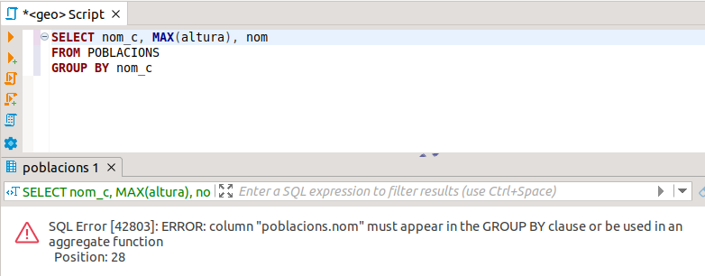

13. La clàusula GROUP BY
Agrupa totes les files amb valors iguals d'una o d'unes columnes
Sintaxi
SELECT <columnes>
FROM <taules>
GROUP BY <columnes>
Per cada fila amb valors iguals de les columnes de la clàusula GROUP BY , en trau només una, és a dir, les agrupa.
Les funcions d'agregat agafen tot el seu sentit i potència combinades amb el GROUP BY : tornaran un valor per cada grup. Així, per exemple, aquesta sentència traurà quantes poblacions hi ha en cada comarca:
SELECT COUNT(*)
FROM POBLACIONS
GROUP BY nom_c
Si volem excloure files per a que no entren en les agrupacions, ho farem per mig de la clàusula WHERE. En aquest exemple ens aprofitem del codi de municipi, que en el cas dels municipis de la província de Castelló és 12000 i pico.
SELECT COUNT(*)
FROM POBLACIONS
WHERE cod_m >= 12000 and cod_m < 13000
GROUP BY nom_c
Quan tenim agrupacions de files, bé perquè utilitzem la clàusula GROUP BY, bé perquè entre les columnes que es trien en el SELECT hi ha alguna funció d'agregat, o les dues coses a l'hora, es poden cometre errors amb una relativa facilitat. Quan hi ha una agrupació totes les columnes que seleccionem amb el SELECT hauran d'estar en el GROUP BY, o bé estar dins d'una funció d'agregat. En cas contrari ens donarà error. Per exemple, aquesta consulta funciona bé, i de fet és millor consulta que les d'abans, ja que ens diu la comarca i el numero de pobles que té cadascuna:
SELECT nom_c, COUNT(*)
FROM POBLACIONS
GROUP BY nom_c
Però aquesta no:
SELECT nom_c, COUNT(*), cod_m
FROM POBLACIONS
GROUP BY nom_c
És sintàcticament incorrecta, i a banda no té sentit: si agrupem tots els pobles de la mateixa comarca ¿com hem de poder traure després el codi del municipi de cada poble?.
Com és relativament fàcil cometre aquest error, haurem d'identificar aquest error, per a poder solucionar-lo.
Per exemple, aquesta consulta ens dóna la població més alta de cada comarca:
SELECT nom_c, MAX(altura)
FROM POBLACIONS
GROUP BY nom_c
Però si intentàrem traure també el nom de la població més alta de cada comarca:
SELECT nom_c, MAX(altura), nom
FROM POBLACIONS
GROUP BY nom_c
ens donaria el següent error:

Hem d'aprendre a identificar aquest error, i solucionar-lo. En aquest cas el solucionarem llevant el camp Nom. La sentència per a poder traure el nom de la població més alta de cada comarca és complicada, i encara no podem fer- la.
Exemples
1) Comptar el nombre d'instituts de cada població.
SELECT cod_m, COUNT(*)
FROM INSTITUTS
GROUP BY cod_m
2) Comptar el nombre de comarques de cada província.
SELECT provincia, COUNT(*)
FROM COMARQUES
GROUP BY provincia
3) Calcular l'altura màxima, mínima i l'altura mitjana de cada comarca.
SELECT nom_c, MAX(altura), MIN(altura), AVG(altura)
FROM POBLACIONS
GROUP BY nom_c
4) Comptar el nombre d'instituts de cada població i cada codi postal.
SELECT cod_m, codpostal, COUNT(*)
FROM INSTITUTS
GROUP BY cod_m, codpostal
 Exercicis apartat 13
Exercicis apartat 13
6.21 Comptar el número de pobles de cada província (és suficient traure el codi de la província i el número de pobles).
6.22 Comptar el nombre de clients en cada poble i codi postal.
6.23 Comptar el número de factures de cada venedor a cada client.
6.24 Comptar el número de factures de cada trimestre. Per a poder traure el trimestre i agrupar per ell (ens val el número de trimestre, que va del 1 al 4), podem utilitzar la funció TO_CHAR(data,'Q').
6.25 Calcular quantes vegades s'ha venut un article, la suma d'unitats venudes, la quantitat màxima i la quantitat mínima.
6.26 Comptar el número d'articles de cada categoria i el preu mitjà.
6.27 Calcular el total de cada factura, sense aplicar descomptes ni IVA. Només ens farà falta la taula LINIES_FAC , i consistirà en agrupar per cada num_f per a calcular la suma del preu multiplicat per la quantitat.
Llicenciat sota la Llicència Creative Commons Reconeixement NoComercial CompartirIgual 3.0